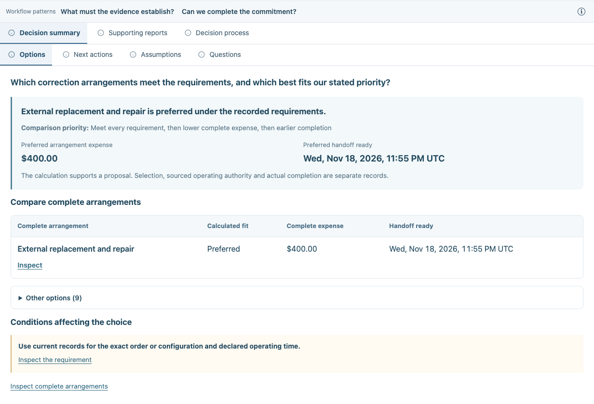

A team can know little about which future will occur and still have a well supported course of action. A second team can learn many details while making no better decision. Information matters through its relationship to the goal.
Consider a fictional supplier preparing a retail launch. Maya coordinates a shipment recommendation under a $5,000 expense limit. Direct costs $4,000 and arrives Friday at noon; Consolidated costs $5,000 and arrives Thursday at 6 p.m. The cost-first review prefers Direct while it remains supported and bookable. In the later supplied review, Direct’s booking cutoff has passed and Consolidated is preferred because it still protects the commitment. Follow the related shipment exception for a different change: a current scoped confirmation replaces support for an older order revision.
That example separates feasibility, preference, and acceptance. A broader planning question is how to handle conditions that remain uncertain. Should Maya buy information, change the operation, avoid a dependency, or prepare a response? The numerical model below is an original teaching extension, not a calculation from that shipment application.
We keep the same named decision statement throughout.
The slot names are explanatory notation for this argument. SDK schemas and workflow definitions specify actual records and steps. Human acceptance means agreement to an operating commitment.
This plan includes
plan_contents.
We have checked it under these conditions:assessed_conditions.
The result establishesestablished_finding.
We favorpreferred_optionsbecausepreference_basis.
Acceptance ofnext_actionisacceptance_status, withdecision_ownerresponsible.
If we observereassessment_trigger, we willcontingency_responsebeforeresponse_deadline.
What does the proposed action change?
Different actions can improve a decision through different mechanisms:
| Mechanism | Example | What needs support |
|---|---|---|
| Learn | Inspect an authoritative record before the next commitment. | What the observation reveals, its reliability, and when it arrives. |
| Control | Secure a resource or change a process. | How the intervention changes operating possibilities, including failure modes. |
| Avoid dependence | Select an arrangement that does not need a particular confirmation. | Which requirements apply to the selected branch. |
| Cope or adapt | Provide a buffer or a response to a lost loading window. | Whether the arrangement or response works with available time, resources, and authority. |
An action may combine these effects. A reservation can change capacity and produce evidence. A rehearsal can reveal a fault and consume a production window. Learning and control are therefore distinct modeling questions even when one activity provides both.1
Choosing a service settles a choice in plan_contents; it does not by itself establish the future order state. A supplied or requested confirmation is also different from an authenticated confirmation covering the proposed work.
Which uncertainty matters to the goal?
For a simple extension, let combine an additional order change before a specified release review, availability of a loading window, and quoted transit versus one day longer. Use three independent fair binary variables, giving eight equally likely states and bits. These are stipulated probabilities.
Let indicate whether action a achieves a stated operating target in state s. If probabilities are justified, its modeled target probability is
The binary outcome entropy is . A plan that achieves the target in every modeled state has and zero target-outcome entropy, even though can remain three bits. A plan that certainly misses the target also has zero target-outcome entropy. Minimizing entropy alone therefore cannot be the goal.
If actions change the state distribution, that effect must be modeled separately; the preceding formula treats S as unaffected by the selected action. Where only unweighted scenarios are available, counting target-achieving cases provides coverage information rather than an automatic probability estimate.
A worked comparison of learning and robust action
Suppose Maya is considering two specialized arrangements, A and B, and a robust arrangement R. This abstract payoff model stipulates that all three meet their basic resource and authority requirements. The operating target may be missed and is penalized in value; it is not yet a universal feasibility gate. The next section examines what changes if target achievement is mandatory.
The arrangements already accommodate both modeled loading and transit outcomes, so only O affects their payoffs. Establishing such coverage in a real operation would require its own evidence and feasible operating arrangements. Here it is an explicit teaching assumption.
| Arrangement | Prior expected value | ||
|---|---|---|---|
| A: specialized for unchanged order | 120 | −80 | 20 |
| B: specialized for changed order | −80 | 120 | 20 |
| R: works in either order state | 60 | 60 | 60 |
Values are stipulated units of operating benefit after operating costs. They are not freight quotes, measured profits, or dollar estimates for Maya’s published case. A study charge introduced below is additional and is counted once.
With , the best current action is R:
The robust action leaves all three bits of state uncertainty unresolved while achieving the target in every stipulated state. The two specialized actions tie at 20; that tie is not the preferred set because R has greater expected value.
Perfect information about O, available before choosing an arrangement, would permit A for and B for . It produces an expected value of 120. The value of perfect information is therefore , using the best current action as the baseline. Comparing against the inferior value 20 would overstate the benefit of learning.
Now suppose a study returns a report Y that identifies O correctly with probability 0.9 in either state. Its errors do not depend on L, T given O. The study costs 10 value units and returns before the commitment cutoff, while all three arrangements remain available. These timing and availability assumptions are necessary for the following policy to be actionable.
After , Bayes’ rule gives probability 0.9 for . Arrangement A has conditional expected value
compared with 60 for R and −60 for B. The symmetrical result after favors B. Both reports have probability , so the observation-contingent policy has gross value 100 and net value .
The study reveals only bits about the state, leaving bits. That reduction is sufficient to improve the expected decision value in this model. An information-seeking action can be evaluated through the later choices its results enable.1
For comparison, suppose a different study reveals L perfectly, also costs 10, and arrives in time. It removes one full bit. But L does not affect any payoff in this stipulated model, so R remains optimal after either result. Gross decision improvement is zero, and net value falls to .
| Strategy | Residual state bits | Target probability | Net value |
|---|---|---|---|
| Choose R now | 3.0000 | 1.00 | 60 |
| Study O; select A or B from Y | 2.4690 | 0.90 | 90 |
| Study L perfectly; still choose R | 2.0000 | 1.00 | 50 |
The study removing the most entropy has the lowest net value in this comparison. The strategy with the highest expected net value has a lower target probability than the robust action. These columns answer different questions; the decision criteria determine which tradeoff is acceptable.
When is the apparently better strategy inadmissible?
Suppose the operating target is a mandatory requirement: every modeled state must achieve it. Then A and B are not adequate fixed plans. The noisy-study policy also fails that gate because an erroneous report has positive probability. Its expected value of 90 cannot establish the required all-state support.
The team must retain R, or establish another admissible policy with a verified fallback. That fallback must still be available after the observation and must meet the cost, timing, resource, and permission conditions. It cannot be assumed into existence because it would make the policy attractive.
More generally, let contain the actions allowed under the current basis. For a study that leaves those opportunities intact, gross sample information value is
The study’s net improvement subtracts its cost in the same value units. Free optional information that can be ignored does not reduce the optimum when it leaves the available choices unchanged. A real study can consume time, money, and capacity, so it may change those choices as well as supply information.
This preserves the distinction between completion, feasibility, preference, and acceptance. A computed expected value is a comparison under a model. It does not waive a mandatory condition or record a human decision.
What do control and contingency preparation add?
An effective intervention can change what happens. A process change might make an operating condition more predictable; a valid reservation might secure a resource. Such claims need support for their causal effect, scope, duration, and failure modes. Recording a request or choosing a convenient value does not establish that control was obtained.
An arrangement can also avoid a dependency. If a route does not need a consolidation loading window, uncertainty about that window can cease to matter to its feasibility. The uncertain condition has not thereby been learned or eliminated from the world.
A contingency policy specifies observable triggers and later actions. “If the window is lost, use the other service” is only useful if the loss is observable early enough and that service can still be authorized, funded, and booked. reassessment_trigger, contingency_response, and response_deadline should preserve those dependencies. Examining vulnerabilities and improving performance across plausible futures is the contribution of robust planning.2
For the soft-target teaching example, an actionable proposed learning rule is: “Obtain Y before the commitment cutoff. If , propose A; if , propose B. The study costs 10 value units. If it cannot finish while those choices remain available, reassess the study purchase and the current robust action.” Human acceptance is still needed for the study and the resulting operating action, within their respective authority.
Put the comparison beside the decision record
The plan_contents identifies whether we are buying evidence, intervening, selecting a fixed arrangement, or preparing a contingent policy. assessed_conditions retains the probability and payoff assumptions, the observation stage, and the scope of the operating checks. The established_finding reports what those checks and calculations support. preferred_options and preference_basis preserve the accepted comparison rule, including whether target failure is permitted at all.
next_action, acceptance_status, and decision_owner then identify the particular human commitment. Unknown approval status can be investigated; obtaining new approval requires an actual authorized decision. A forecast of acceptance is not the acceptance itself.
Decision Lab’s retained shipment and gifting examples preserve distinctions between completed assessments, checked feasible plans, established preferences, operating decisions and recorded completion. The gift-kit native evidence archive retains $300 in-house work preferred when time permits and a $400 external package preferred when only it fits the original cutoff. When current scoped diagnostic evidence establishes that only the insert needs correction, the $100 replacement can suffice; an attractive quote cannot supply that diagnosis.
The workflow then checks actual correction, fresh rehearsal and handoff records against the original promise. A later failed test can withdraw support that an earlier positive supplied. These recorded findings leave external authority and execution with the team and its connected systems. The information and utility calculations in this article remain a proposed teaching layer, not outputs of those existing examples.


Local production capture · gift-kit workflow 4.1.0. Capture and calculation record.
A real extension would need reviewed outcome measures, probabilities where justified, feasible responses, funding and timing checks, and retained human decisions. Its purpose would be to compare what a course of action enables, rather than reward the largest reduction in a single uncertainty number.
Before the next commitment, finish this statement: “If we observe this result, we will propose this action; otherwise, we will propose that response. We need the result by this time, it will cost this much, and this person must accept the next action.” Those entries connect learning to a decision that can still change.
Companion articles: Why Plans Are Not Enough develops the claims a plan can support. How Much Uncertainty Is Left? derives the three-bit baseline and the noisy observation’s 0.5310-bit information gain.